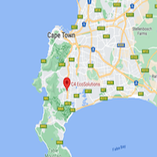
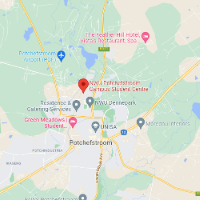
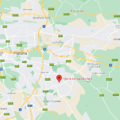

Gerhardt Botha
Junior geospatial data scientist

I am a junior geospatial data scientist with a passion for technology, earth observation and data science.
Combining observations, research and analytics for environmental solutions
A brief overview
Recent advances in remote sensing technology and earth observation has enabled us to study pressing problems with great detail. My career as a junior geospatial data scientist started in November 2019 when I started working at the North-West University, Climatology Research Group whilst completing my undergraduate studies. Since, I have been working as a geospatial data scientist at C4 EcoSolutions. I have a passion for remote sensing, GIS and earth observation technology. The integration of observations, theory and data analytics is of great interest to me and hence my expertise.
-

Since 2022
Data Scientist at C4 EcoSolutions
-

2021-2022
Research Intern and Masters student at North-West University
-
2020-2021
Honours student at North-West University
Completed BSc Honours in Environmental Science at NWU whilts working as a research asssitant at the Climatology Research Group
-
2016-2019
Honours student at North-West University
Started working at the Climatology Research Group , North-West University (NWU). Finished undergraduate degree at NWU.
-

2012 - 2016
High School Diploma
Completed High School diploma at Hoërskool Garsfontein.
The UAE Program for Rain Enhancement Science (UAEREP)
Unmanned Aircraft Systems (UAS) for cloud seeding operations
World Bank Source Apportionment
Source apportionment reasearch in the greater Johannesburg area
Data Science
Data science is a core skill I have learned by working on projects with large datasets. Python, R and Excell include some of the languages used. Visualising and deriving statistics from remote sensing, meteorological and air quality monitoring observations requires a sound understanding of multi-dimentional data integration and computational resource management.
GIS
All projects I have worked on in the field of environmental science has had a geospatial component. Using various platforms including ArcGIS, QGIS and Google Earth Enigine has enabled me to gain experience in performing advanced geospatial analysis.
Project Management
Since my involvement at the CRG, I have had the oppertunity to lead certain field campaigns on different projects.
Technical Report Writing
Apart from research projects and academic writing, I have also gained experience in writing reports for popular industry leaders (Anglo, SASOL, Medical Research Council, World Bank).
Modelling
"All models are wrong, but some are useful" is the famous quote from George Box, but in air quality and meteorology we find them quite useful. I have thus gained experience with some dispersion models (AERMOD, CALPUFF) and numerical weather prediction models (GFS, WRF, EMCWF).
Software Development
I have a great interest in technology and embarked on a small development project. A need for low-cost data loggers led me to the development of a RaspberryPi data logger programmed with Python. My experience in software development is still limited, but definitely something that will be expanded on.